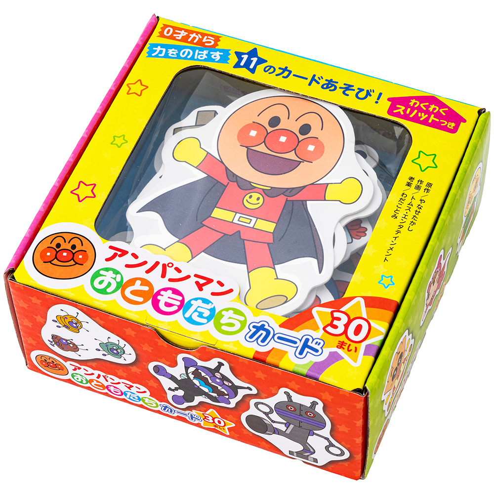

010歲起
把卡片放進盒子
手指靈活度・專注力・語言
- 將卡片散放，家長拿著盒子，示範把卡片投入側邊狹縫，邊說「麵包超人進去囉！」。
- 輪到孩子投入時，以角色名字鼓勵並協助；成功後給予回應。
30張雙面角色卡搭配附投卡狹縫的收納盒，從「投入卡片」到「剪影猜角色」，陪伴孩子逐步探索。以下依原廠日文玩法手冊整理為繁體中文重點。

內容物為30張雙面卡片：22張好朋友角色卡及8張姿勢不同的卡片；附16頁日文玩法手冊和可投卡的收納盒。卡片正面是角色，背面是對應剪影。
玩法年齡標示：原廠將部分遊戲標示為「0歲起」；商品外盒適用年齡仍為10個月左右起。請依孩子的實際發展能力選擇玩法，並由成人全程陪同。
建議先從少量卡片、短時間互動開始；不必急著完成所有遊戲。
每次先選一兩種玩法即可。對年紀較小的孩子，家長可先示範、說出角色名稱，再讓孩子嘗試。若孩子還不會說話，可用指認、拿取及投入卡片的方式參與；進階玩法則逐漸增加卡片數量。
Q｜一定要一次使用30張嗎？
A｜不需要。原廠不少玩法建議先從2～5張開始，再依能力增加。
Q｜不懂日文也可以玩嗎？
A｜可以。遊戲核心是看圖、配對、找尋、投入收納盒及親子語言互動，本頁已將原廠11種玩法整理為中文步驟。
Q｜卡片背面有什麼用途？
A｜是角色剪影，可用在記憶配對及猜角色遊戲中。
請由成人陪同使用，勿讓孩子將卡片放入口中。卡片與紙盒應避免強力拉扯、凹折或浸水；若有破損請停止使用。塑膠包裝及其他包材應在拆封後妥善移除，避免窒息危險。
請同時閱讀原廠日文手冊及商品包裝上的完整注意事項。
依フレーベル館《アンパンマン おともだちカード》（ISBN 9784577053690）隨附16頁日文玩法手冊整理。為方便閱讀，本指南為重點摘要與中文說明，不取代原廠完整說明。商品及角色著作權歸原權利人所有。